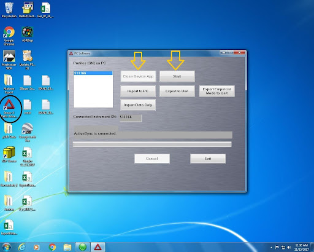
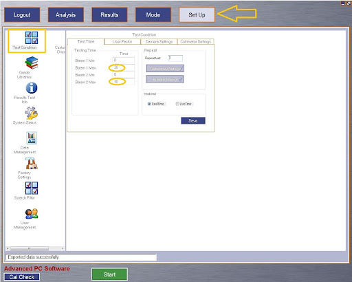
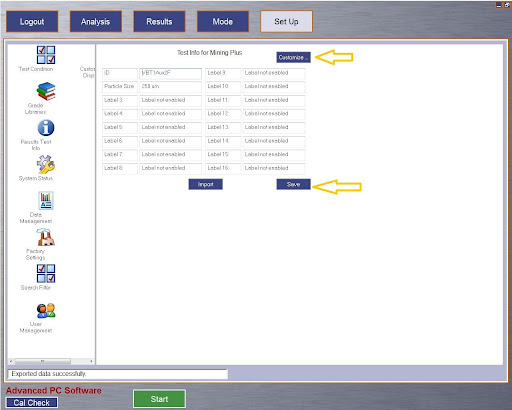
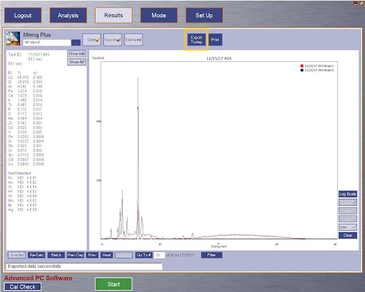

21 pXRF
Last edited: 09NOV2023 NP
Portable X-ray fluorescence (pXRF) is an estimate of elemental composition. This protocol is written for use with Olympus pXRF. Directions for XRF use in benchtop/base and stand/computer included. Directions for use in field are under development.
If you have not had training with Nic, Kat, or Nora and do not have a dosimeter, then you cannot operate the pXRF.
21.1 Materials
- Soil samples, preferably dried and sieved to 2mm
- Dosimeter
- XRF with charged battery
- Calibration coin
- Stand or base
- Computer, if using stand
21.2 Benchtop/Base Use Procedure
21.2.0.1 Physical Setup
- Make sure you have your dosimeter on.
- Base should be plugged in if there is any intention to charge a battery.
- Turn the fan on to point towards the top of the scanner.
- Put a battery in the scanner, turn on the pXRF via the top power button.
21.2.0.2 Operation
- Tap the screen to agree that you have training to use the equipment
- If it’s the first time the scanner has been used for the day, user must locate the calibration coin to scan.
- After the quick calibration scan, take 2-3 of our known Pb standards and scan for reference.
- Once you start scanning, each sample will scan for roughly a min. When the red light stops flashing, you can record the result.
- Overheating is likely even with the fan. Limit operation to 1-1.5 hours every 4 hours.
- For the benchtop method, we have been scanning the sample twice (once on either side of the bag), and averaging.
- Numbers should be multiplied by 10,000 to report in ppm.
21.3 Stand and Computer Use Procedure
21.3.0.1 Pysical Setup
- Make sure you have your dosimeter on.
- Put a battery in the device, turn on the pXRF, then connect to stand. Screen side is down, handle is sticking towards person. Make sure to align the pins with the stand to ensure connection with the computer. Tighten with the screws on the right side to keep it in place.
21.3.0.2 Program Setup
Computer username: cfansjelinskilab
Password: Welcome1
- After connecting the XRF to the stand, turn on the computer. Windows Mobile box should also open; it must have a green check saying “connected” for the computer and XRF to talk to each other. If there’s a gray circle with a line through it, the computer and machine aren’t talking. Try turning the XRF off and on again, or unplugging it from the stand. Also, make sure the pins in the XRF are fully connected to the stand.
- I have only had issues with the Windows Mobile window when I turn the computer on before screwing the XRF into the stand.
- Open Innov-S Delta Advantage. Select “yes” to run the program. When the screen opens up, select “Close Device App”, then “Start”. This should open the program and allow the computer to control the pXRF.
Username: ADMI (not case sensitive)
Password: 1234

- Once the program is fully open, calibration must happen next. There is a coin in the pXRF case; place it in the stand, making sure that it is centered over the screen. On the bottom left of the program, there will be a calibration button. If it is not illuminated, then there has been a problem with the set/connection.
- Click Mode and make sure Mining Plus is selected. The majority of the samples that will be scanned will use this mode. It has the most accurate metal and trace elements results.
- Next, click Set Up, then Test Conditions, then set the Beam Max to 30 (seconds) for both beams 1 and 2. This could vary with different projects, for most samples this is the desired time. Check with Nic if you are unsure.
- In Soil mode, there will be 3 beams. Set each to 30 seconds if you use that.


- To set up the data sets, go to Set Up, then Results Test Info, and select Customize. There you can change the name of each section. It is helpful to know what you want your data spreadsheet to look like to know how many columns you want/need. Once the initial set up is done, make sure to hit Save. From there you can select the green start button on the bottom center of the screen.
- Edit: change the sample name before you click start! See my note below
21.3.0.3 Operation and Exporting
- Gently open the lid, place the calibration coin in the stand, and close the lid. Most people place it blank side down (printed side up). Press “Cal Check” on the bottom left of the program screen.
- Once the yellow button stops blinking, the scan is done.
- The lid is very fragile - please open it carefully and not more than 45º.
- Once calibration is complete, samples can be scanned. One at a time, place them in the stand. Enter the sample code in the text box and click start.
Previous versions of this protocol wrote the following: After each sample is scanned, to change the sample ID, go to Analysis and on the top left corner you will see the last scanned sample. Click on the “…” in the box next to the id. There you will be able to edit the identification. Make sure to hit save before you start again.
Nora’s note: I couldn’t successfully change the sample name after running it. Under analysis, change the sample name before running it. You don’t have to click the three dots, just type directly into the textbox, then click run.
- Once all your samples have been scanned, you can export the day’s samples with a simple click of a button. Make sure you are in Results and select the box Export Today. It automatically saves it on the desktop and saves it as today’s date. From there, I highly recommend changing the file’s name and saving it either in your own folder on the computer or email it to yourself.

- When done using the pXRF, go up to the Logout box, select Logout, then Exit. This brings you back to the initial screen. Select Exit on that screen. Once the programs are turned off, the pXRF may be removed from the stand. Power down. Make sure the battery is removed before putting it back into the case.
21.4 References and Notes
21.4.0.1 Troubleshooting
- If the error message “comm error in monitor thread” pops up, the only solution I’ve found is to restart the computer. I export the data just to be safe, but every time this has happened, the software saved my data and it popped up when i reopened it
- If you close and latch the stand, but the text box still says, “Test Stand/door is opened,” the only solution I’ve found is to restart the computer. Same as above, I export the data to be safe, but the software saved my data.
- “Error measuring spectra” or something along those lines: happened to me when the sample wasn’t over the scanning area. It got moved when I shut the stand door. If the scan is still running but the text box displays that error, stop the test, open the door, move the sample, and rerun. Note in your document or spreadsheet that run numbers x and y are the same sample.
- When that error comes up, the scan will continue to run but the software recognizes that no data is coming back - it’s shooting into the lid of the stand.
##Use in field
21.4.0.2 Physical Setup
- Ensure that batteries are charged and dosimeters for each operating individual are in case; remember, the pXRF may only be operated by those who have been trained and have a dosimeter.
- Have a printed data sheet or lab notebook to write down results.
21.4.0.3 Operation
- While operating, ensure that others are a minimum of 3 feet away from the operator - this is an effort to avoid radiation exposure.
- Unlock the trigger by pressing the lock icon in the top right corner of the screen.
- Calibrate the pXRF by pointing it at the sky, placing the coin on the end, and pressing the trigger once.
- The flashing red light on the top of the pXRF indicates that exposure is occurring.
- Select duration of scan (beam) in setup menu.
- Length of the scan depends on how much time is available, how many samples need to be scanned, et cetera. In the past, we have scanned for a total of 20-120 seconds, so 10-60 seconds for each beam.
- If scanning the soil surface, clear away any plant matter or debris using hands or a trowel.
- If scanning a soil profile, collect or create the profile by coring with a push probe or coring with a probe/slide hammer and transferring the samples to a gutter. Lay a tape measure parallel to the profile and scan at regular intervals.
- Tear a Ziploc sandwich bag in half so there are two sheets of plastic. Place one sheet over the soil surface as a film between the soil and pXRF.
- Hold the pXRF to the soil and press the trigger to scan. Hold the pXRF still while scanning.
- Once the scan is complete, write down the results for all elements of interest.
- The pXRF will save the data, so it is possible to go back and look at the results for previous samples, but it can be difficult to match up which reading # to a certain sample.
- It is good practice to write down reading numbers for each scan along with the results. This can be written on a data sheet or recorded in Survey123. Also record any special notes, especially if samples are taken close to one another, such as “inside raised bed,” and “adjacent to raised bed.”
For a larger sampling effort, it is helpful to have one person work ahead to lay out a tape measure, clear off the soil surface, potentially flag the sampling location, and/or take a GPS coordinate reading using a Garmin or Survey123. If there is enough support, it is also helpful to have one person writing down the results, so the pXRF operator is just scanning. We have not had success exporting data from the pXRF onto a flash drive or computer. There is a cord in the pXRF supplies drawer in S434. Theoretically, exporting from the pXRF is similar to that on the computer; in the results section, choose export today, and the software creates a .csv. However, we cannot find the file on devices. For this reason, we recommend writing down the results during operation (especially if lead, for example, is the only element of interest), or taking a photo of the results screen for each sample.